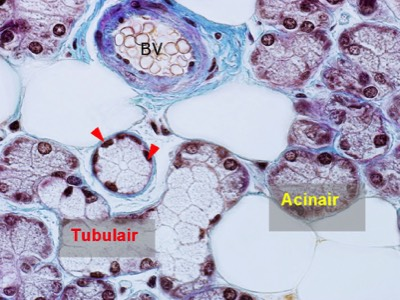
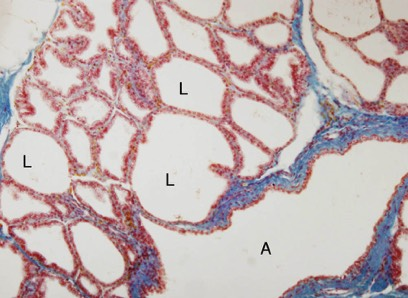

F) Kijk nu naar de algemene morfologie van de multicellulaire exocriene klier:
a. Bekijk de vorm van de kliercelgroepjes:
De vorm van de kliercelgroepjes is meestal tubulair (buisvormig) of acinair (in een soort trosje). Wanneer in 1 klier beide vormen voorkomen spreken we van tubulo-acinaire klieren. In sommige klieren zijn de lumina van de klierdeeltjes erg groot. Zulke klieren noemen we alveolair. Muceuze klierdeeltjes zijn meestal tubulair, sereuze zijn meestal acinair of alveolair.
Benoem de vorm: tubulair, acinair, tubulo-acinair of alveolair.
a. Bekijk de vorm van de kliercelgroepjes:
De vorm van de kliercelgroepjes is meestal tubulair (buisvormig) of acinair (in een soort trosje). Wanneer in 1 klier beide vormen voorkomen spreken we van tubulo-acinaire klieren. In sommige klieren zijn de lumina van de klierdeeltjes erg groot. Zulke klieren noemen we alveolair. Muceuze klierdeeltjes zijn meestal tubulair, sereuze zijn meestal acinair of alveolair.
Benoem de vorm: tubulair, acinair, tubulo-acinair of alveolair.

In dit voorbeeld van een tubulo-acinaire klier zie je zowel tubulaire als acinaire klierdeeltjes. Let erop dat een tubulair deeltje ook dwars kan aangesneden zijn (pijlpunten). De structuur bovenaan in beeld is een bloedvat (BV), duidelijk te herkennen aan de afgeplatte endotheelcelkernen die uitpuilen in het lumen. Dit bloedvat is ook gevuld met rode bloedcellen.

Dit is een voorbeeld van alveolair klierweefsel. Let op het grote lumen (L) van elke alveole. De afvoergang (A) wijst erop dat het exocrien klierweefsel is.
Vordering zelfstudie klierepitheel: